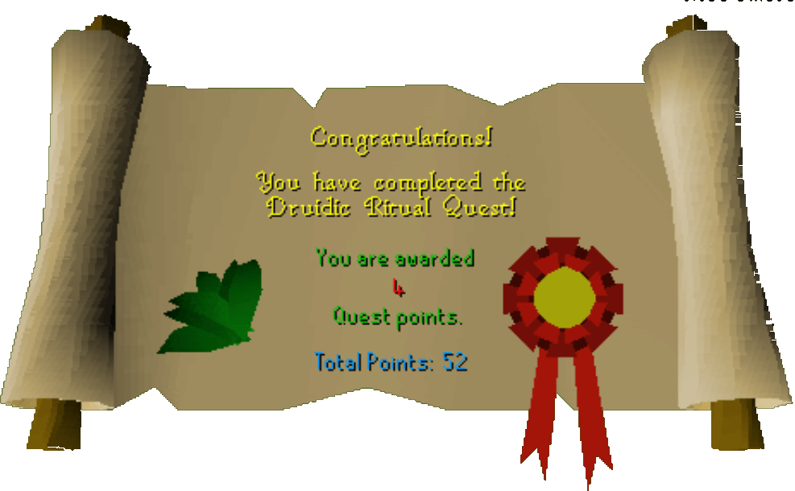

Druidic Ritual
Description: To start using the herblore skill you will need to ask for some training from the druids. However, they require some help with a ritual before they will help you.Difficulty: Novice
Length: Medium
Items & Skills Needed:
Reward: 4 Quest points, 250 Herblore XP, access to the Herblore skill
Instructions:
Talk to Kaqemeex, and he'll tell you what he needs to purify their cursed altar south of Varrock. He says to speak to Sanfew.
Find Sanfew on the 2nd floor of the Herblore shop. He says you need the four meats to be dipped into the Cauldron of Thunder to complete a ritual. Hopefully, you already have these meats and can go there right away.
Head south and a little west to Taverley Dungeon. It's in a clump of dead trees. You won't need armor, but a good weapon to finish off some suits of armor (level 19) quickly will help.
Go in and head north a little until you come to the prison door and try to open it. One of the suits will attack you.
You have two options: defeat it and try to open the gate again. Then defeat the second suit of armor. Assuming both are dead, you should be able to go in now. Alternatively, you can open the door by spam-clicking it, avoiding the fight with the armor.
Use all the meats with the cauldron (they should turn blue), and head back to Sanfew at the Herblore shop. He'll be grateful and tell you to visit Kaqemeex for your Herblore skills training.
Kaqemeex will give you your reward and then explain some things about Herblore. He also refers you to the Scribe section of the website for more info.
Congratulations, Quest Complete!

This quest guide was written on RuneHQ by Gnat88. Thanks to Weezy for corrections.
This quest guide was entered into the database on Tue, Mar 02, 2004, at 10:06:05 PM by Wiz-Master and was last updated on Wed, Mar 31, 2004, at 04:58:22 PM.